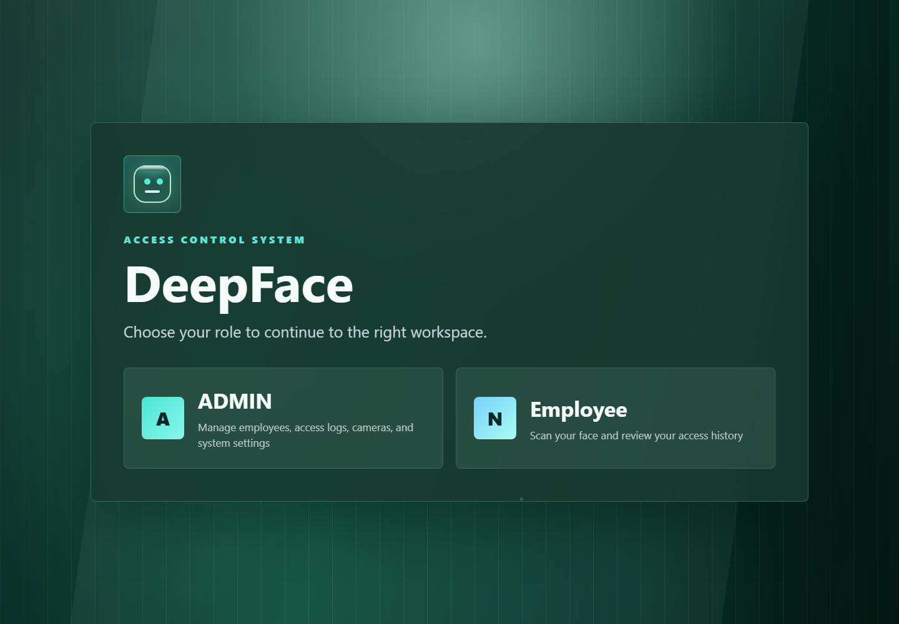
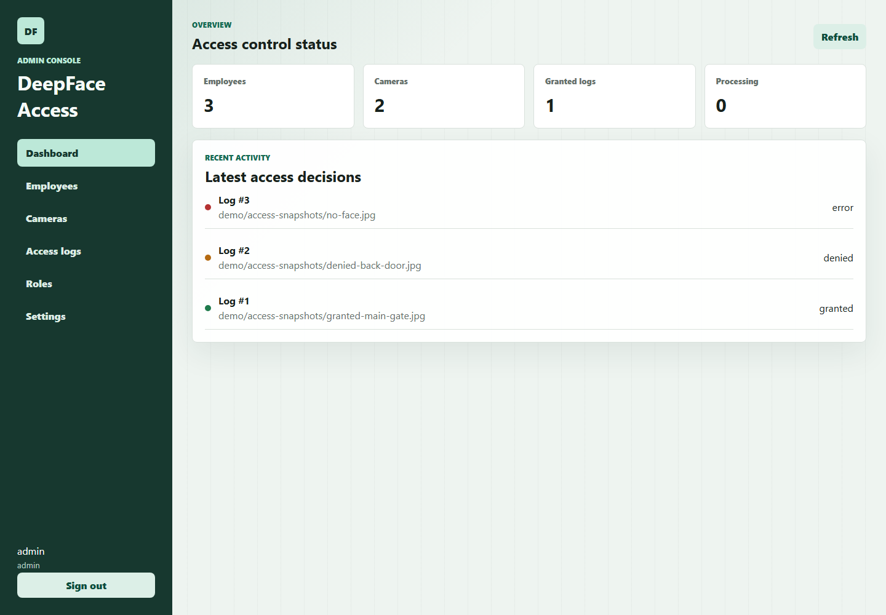

Hệ thống kiểm soát ra vào bằng nhận diện khuôn mặt
Deck trình bày đầy đủ use case, kiến trúc, luồng dữ liệu, AI pipeline, API, dữ liệu, vận hành, kiểm thử, bảo mật và kịch bản demo.
Deck đi theo logic bảo vệ: vấn đề → thiết kế → chứng minh → vận hành.
Thẻ từ, mã PIN và xác nhận thủ công đều có điểm yếu.
- Thẻ có thể bị mượn hộ hoặc quên mang theo.
- Mã PIN có thể bị chia sẻ, ghi lại hoặc nhìn trộm.
- Xác nhận thủ công phụ thuộc con người và khó audit nhất quán.
- Hệ thống cần xác minh nhanh, lưu log và quan sát được trạng thái vận hành.
Mục tiêu không phải “chạy DeepFace”, mà là xây được một hệ thống AI hoàn chỉnh.
User Terminal
Gửi snapshot/webcam, chọn camera, xem trạng thái xử lý và lịch sử gần nhất.
Admin Console
Quản lý employees, cameras, users, enrollment và access logs.
Backend API
Auth, phân quyền, CRUD, upload ảnh, tạo log, đẩy job và metrics.
AI Worker
DeepFace detection, embedding, matching và cập nhật kết quả.
Storage layer
PostgreSQL, MinIO, Qdrant và Redis đúng vai trò.
Ops layer
Nginx, Docker Compose, Prometheus/Grafana, backup và CI/CD baseline.
Admin đăng ký nhân viên. User check quyền tại terminal.
Mỗi access request tạo một log có trạng thái rõ ràng: processing, granted, denied hoặc error.
- Admin tạo employee và upload ảnh khuôn mặt mẫu.
- Worker tạo embedding và lưu vector vào Qdrant.
- User gửi snapshot tại terminal.
- Worker so khớp, verify employee active và cập nhật access log.
Ba giao diện chính trong README là bằng chứng sản phẩm.



Một cổng vào giúp demo và điều hướng rõ ràng.
- Home định tuyến tới User Terminal hoặc Admin Console.
- Nginx gom frontend và backend về cùng entrypoint.
- Người bảo vệ demo bắt đầu từ đây để kể câu chuyện hệ thống.
Terminal tối giản để giảm lỗi thao tác.
- Đăng nhập bằng user account và token.
- Chọn camera active/default từ backend.
- Upload snapshot hoặc chụp webcam.
- Gửi request access và xem log mới nhất.
Admin là control plane của toàn bộ hệ thống.
- Tạo/sửa/vô hiệu hóa nhân viên.
- Upload ảnh enrollment và theo dõi embedding status.
- Quản lý camera/cổng vào và user.
- Xem access logs để audit granted/denied/error.
Tách service để mỗi khối làm đúng việc của nó.
UI
Chỉ hiển thị form, trạng thái và gọi API; không xử lý AI.
Backend
Xác thực, validate, upload, tạo record và queue job.
Worker
Chạy DeepFace, search vector, cập nhật quyết định.
Data/Ops
Lưu business data, object, vector, queue và metrics.
Browser → Nginx → Frontend/API → Queue → Worker → Storage.
| Yêu cầu | Quyết định | Lý do |
|---|---|---|
| API phản hồi nhanh | Backend chỉ tạo log và queue job. | DeepFace có latency biến động, không nên khóa HTTP request. |
| Lưu ảnh an toàn | MinIO lưu ảnh, PostgreSQL lưu object key. | File nhị phân lớn không phù hợp để nhét vào relational table. |
| Search khuôn mặt | Qdrant lưu face vectors. | Vector database phù hợp khi số employee/embedding tăng. |
| Quan sát vận hành | Prometheus + Grafana. | Có health, queue length và access logs by status khi demo. |
| Service | Công nghệ | Trách nhiệm | Repo |
|---|---|---|---|
| Home/User/Admin | React, Vite | 3 trải nghiệm UI theo vai trò. | frontend/ |
| Nginx | Nginx | Reverse proxy và static serving. | nginx/ |
| Backend | FastAPI | Auth, CRUD, upload, queue, health, metrics. | backend/app |
| Worker | Python, DeepFace | AI jobs, embedding, vector search. | worker/app |
| Data/Ops | PostgreSQL, Redis, MinIO, Qdrant, Prometheus, Grafana | Lưu trữ, queue, vector DB, monitoring. | docker-compose.yml |
PostgreSQL giữ dữ liệu nghiệp vụ; hệ khác hỗ trợ đúng chuyên môn.
PostgreSQL
Source of truth cho users, employees, cameras, embeddings metadata và access logs.
MinIO
Lưu ảnh employee-faces và access-snapshots bằng object key.
Qdrant
Lưu vector embedding và payload employee/model metadata.
Redis
Queue tạm thời cho embedding_jobs và access_jobs.
Prometheus
Lưu time-series metrics phục vụ dashboard và alert.
Grafana
Trực quan hóa health, queue backlog và access logs status.
| Quan hệ | Kiểu | Ý nghĩa |
|---|---|---|
| employees → face_embeddings | 1-n | Một employee có thể có nhiều embedding từ nhiều ảnh. |
| employees → access_logs | 1-n / nullable | Log có employee khi match; denied/error có thể không có employee. |
| cameras → access_logs | 1-n | Mỗi lần check access gắn với camera/cổng cụ thể. |
| MinIO object key → PostgreSQL | reference | DB lưu đường dẫn object, file thật nằm trong MinIO. |
| Qdrant payload → employee_id | reference | Worker search vector rồi verify employee active trong PostgreSQL. |
Enrollment biến ảnh mẫu thành vector có thể tìm kiếm.
Upload
Admin gửi ảnh mặt cho employee.
Validate
Backend kiểm tra file, type, size.
Object
Ảnh vào MinIO employee-faces.
Queue
Redis nhận embedding job.
Embedding
Worker detect face và tạo vector.
Upsert
Lưu PostgreSQL và Qdrant.
| Gate | Điều kiện | Nếu fail |
|---|---|---|
| Upload validation | File không rỗng, đúng extension/content type, không vượt size. | API từ chối, không queue job. |
| Face detection | Ảnh cần đúng một khuôn mặt. | embedding_status = error. |
| Duplicate check | Không quá giống employee active khác. | Worker ghi lỗi duplicate. |
| Vector save | PostgreSQL và Qdrant cập nhật thành công. | Ghi embedding_error để admin xử lý. |
Access check tạo log ngay, worker cập nhật kết quả sau.
Snapshot
User gửi ảnh từ terminal.
Processing
Backend tạo access log.
Queue
Redis nhận access job.
Embedding
Worker tạo vector snapshot.
Search
Qdrant trả candidate gần nhất.
Decision
Cập nhật granted/denied/error.
| Tình huống | Status | Giải thích |
|---|---|---|
| Ảnh lỗi, không đọc được hoặc MinIO lỗi | error | Worker không có input hợp lệ để xử lý. |
| Không detect mặt hoặc nhiều mặt | error | Hệ thống yêu cầu một request tương ứng một người. |
| Không có candidate phù hợp | denied | Ảnh hợp lệ nhưng không giống employee đã đăng ký. |
| Score dưới threshold | denied | Có candidate nhưng độ tin cậy chưa đủ. |
| Employee inactive | denied | PostgreSQL quyết định quyền cuối cùng. |
| Employee active và score đạt ngưỡng | granted | Ghi employee, score và message vào access log. |
Cấu hình đủ rõ để bảo vệ và đủ linh hoạt để tuning.
Threshold không tuyệt đối
Camera, ánh sáng, góc mặt, kính, khoảng cách và chất lượng ảnh đều ảnh hưởng score.
Dataset demo nhỏ
Không nên dùng kết quả MVP để kết luận accuracy production.
Một ảnh là chưa đủ
Production nên hỗ trợ nhiều ảnh/embedding cho mỗi employee ở nhiều góc mặt.
Latency biến động
Model load và detector có chi phí cao, vì vậy cần worker nền.
No-face/multi-face
Cần xử lý rõ để tránh quyết định sai tại terminal.
Privacy
Khuôn mặt là dữ liệu sinh trắc học, cần retention và quyền truy cập chặt.
| Nhóm | Endpoint | Vai trò |
|---|---|---|
| Auth | POST /auth/login, GET /auth/me | Login, bearer token, user profile. |
| Employees | GET/POST/PUT/DELETE /employees | Quản lý hồ sơ nhân viên. |
| Face image | POST /employees/{id}/face-image | Upload ảnh và queue embedding job. |
| Cameras | GET/POST/PUT/DELETE /cameras | Cấu hình camera/cổng vào. |
| Access | POST /access/check-image | Queue access job và tạo log processing. |
| Ops | /health, /metrics | Health check và Prometheus metrics. |
Admin role
Quản lý employee, camera, user, face-image enrollment, access logs và status hệ thống.
User role
Dùng terminal để gửi ảnh check access và xem thông tin/log cần thiết cho terminal.
API guard
Endpoint quản trị cần role admin; request thiếu/sai token trả 401/403.
Password handling
Password được hash, không trả hash qua API và không commit secret thật.
Redis chỉ giữ metadata nhỏ, không giữ file ảnh nhị phân.
embedding_jobs
Job đăng ký khuôn mặt: employee_id, image_key, model config và type.
access_jobs
Job kiểm tra truy cập: access_log_id, camera_id, image_key và type.
Vì sao nhẹ?
Ảnh thật nằm trong MinIO, Redis chỉ là đường dẫn và metadata job.
Vì sao scale được?
Có thể tăng số worker mà không đổi UI/backend contract.
| Đối tượng | Status | Ý nghĩa |
|---|---|---|
| Employee embedding | none | Chưa upload ảnh hoặc chưa có job. |
| Employee embedding | pending | Backend đã queue, worker chưa xử lý xong. |
| Employee embedding | success | Embedding đã lưu vào PostgreSQL/Qdrant. |
| Employee embedding | error | Ảnh/model/dependency lỗi. |
| Access log | processing | Request đã nhận, đang chờ worker. |
| Access log | granted / denied / error | Kết quả cuối của access pipeline. |
Monitoring chứng minh hệ thống vận hành, không chỉ chạy demo UI.
| Metric | Ý nghĩa | Khi demo |
|---|---|---|
| deepface_backend_up | Backend còn sống. | Nên bằng 1 hoặc UP. |
| deepface_database_up | Kết nối PostgreSQL. | Nếu 0, API nghiệp vụ không ổn. |
| deepface_redis_up | Kết nối Redis. | Nếu 0, job không vào queue. |
| deepface_queue_length | Số job đang chờ. | Tăng liên tục nghĩa là worker backlog/lỗi. |
| deepface_access_logs_total | Số log theo status. | Chứng minh granted/denied/error có record. |
Docker Compose đóng gói toàn bộ stack local.
Application
nginx, backend, worker, frontend-home, frontend-user, frontend-admin.
Data
database, redis, minio, qdrant và persistent volumes.
Ops
prometheus, grafana, alertmanager và cron-backup.
Copy-Item .env.example .env → docker compose up --build -d → mở http://localhost:8080
| Thành phần | URL | Khi nào mở |
|---|---|---|
| Home Gateway | http://localhost:8080 | Bắt đầu demo. |
| User Terminal | /user/ | Gửi snapshot check access. |
| Admin Console | /admin/ | Quản lý employees và logs. |
| Backend health | /health | Chứng minh backend/dependencies. |
| Prometheus/Grafana | :9090, :3000 | Monitoring và dashboard. |
| MinIO/Qdrant | :9001, :6333 | Object storage và vector DB. |
Helm baseline
Chart tại helm/deepface-access là nền tảng triển khai Kubernetes cho backend, worker, frontend, database, Redis, MinIO, Qdrant và ingress.
Backup strategy
Script backup local/S3 và cron-backup dump PostgreSQL định kỳ lên MinIO/S3-compatible storage.
Production cần thêm
Image registry, tag, resource request/limit, Kubernetes Secret, persistent volume và TLS.
Data cần bảo vệ
PostgreSQL là quan trọng nhất; MinIO bucket và Qdrant snapshot nên bổ sung khi production.
| Nhóm | Nội dung | Lệnh |
|---|---|---|
| Backend API | Auth, employees, cameras, access, logs, operations. | pytest backend/app/tests |
| Worker services | Detector, embedder, vector store, job handlers. | pytest worker/app/tests |
| Frontend build | TypeScript compile và Vite production build. | npm run build |
| Runtime baseline | Health, routes, metrics, Redis queues. | scripts/demo-baseline-check.ps1 |
Stack starts
Compose service Up/healthy, Home mở được.
Admin creates employee
Employee xuất hiện trong Admin Console.
Embedding success
Upload ảnh, worker xử lý, Qdrant có vector.
Granted case
Snapshot đúng người chuyển từ processing sang granted.
Denied/error case
Ảnh sai/no-face tạo denied hoặc error rõ ràng.
Monitoring visible
Grafana/Prometheus hiển thị service health và queue.
Hiện có
Bearer token, password hash, role admin/user, CORS config, upload validation.
Cần hardening
Đổi credential demo, HTTPS, rate limit, secret manager, audit admin actions.
Dữ liệu sinh trắc học
Cần consent, retention, quyền xóa dữ liệu, giới hạn truy cập ảnh gốc và backup.
| Rủi ro | Tác động | Giảm thiểu |
|---|---|---|
| Threshold chưa calibrate | False accept / false reject. | Thu dataset thật và tune theo FAR/FRR. |
| Worker bottleneck | Queue backlog tăng. | Scale worker, đo latency, warmup model. |
| Qdrant mất sync | Search vector sai/lỗi. | Giữ metadata trong PostgreSQL và có reindex job. |
| MinIO object mất | Không debug/reprocess ảnh. | Bucket backup, lifecycle policy và object retention. |
| Biometric privacy | Rủi ro pháp lý và đạo đức. | Access control, audit log, retention và minh bạch mục đích. |
Demo theo luồng nghiệp vụ, không theo cấu trúc thư mục.
Start
Chạy Docker Compose.
Home
Mở gateway, giới thiệu role.
Admin
Tạo employee, upload ảnh.
Worker
Đợi embedding success.
User
Gửi snapshot check access.
Ops
Mở logs/metrics/dashboard.
Điểm mạnh là thiết kế hệ thống, không chỉ thuật toán nhận diện.
Dự án có UI theo vai trò, backend điều phối nghiệp vụ, worker AI bất đồng bộ, dữ liệu tách đúng trách nhiệm, access logs để audit và monitoring để chứng minh runtime.